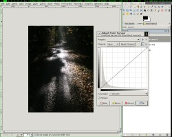

Sorry but I have to bring this up again. Because the photo-nerd in me keeps thinking about it. Carsten, your seemingly underexposed photo has more information left in it than you might think. The Color Curves tool is the swiss army knife scalpel chainsaw of image post processing. STFW for curves tool tutorials!
